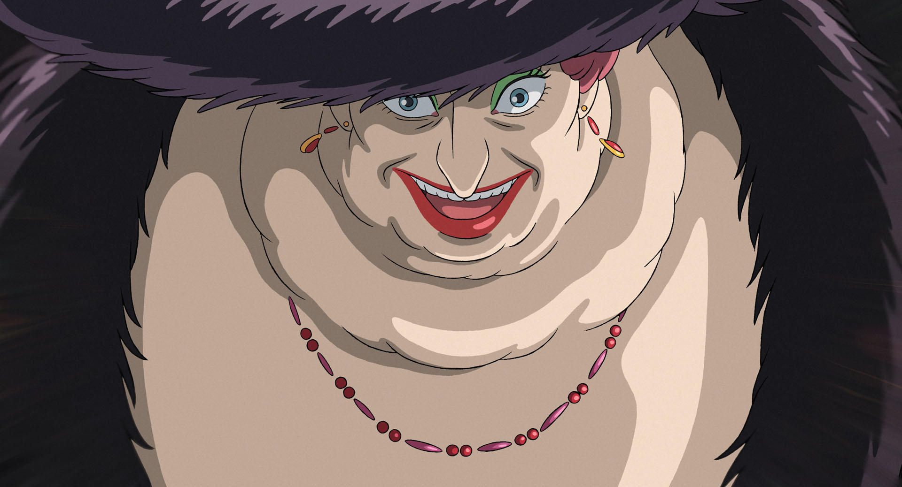
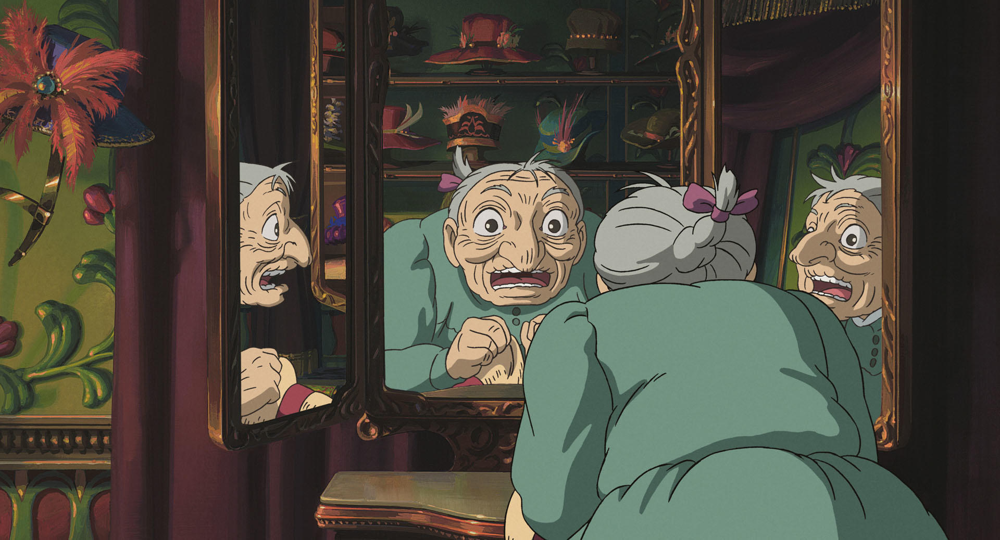
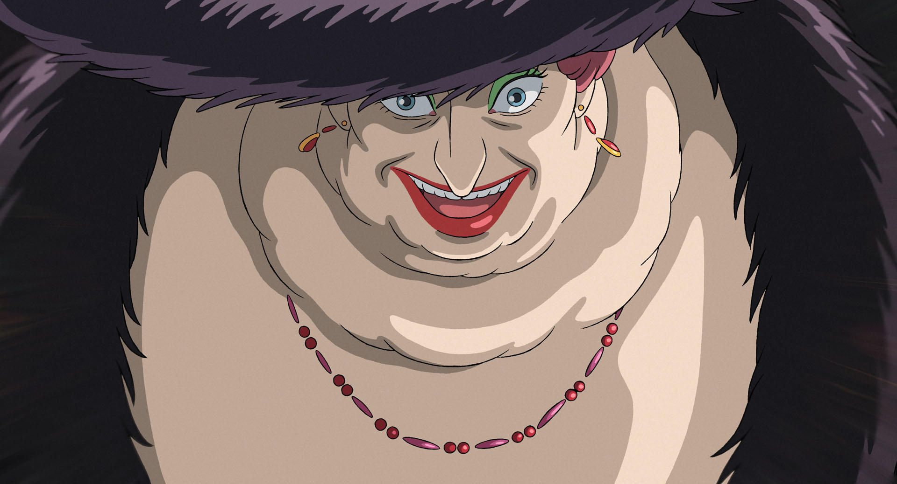
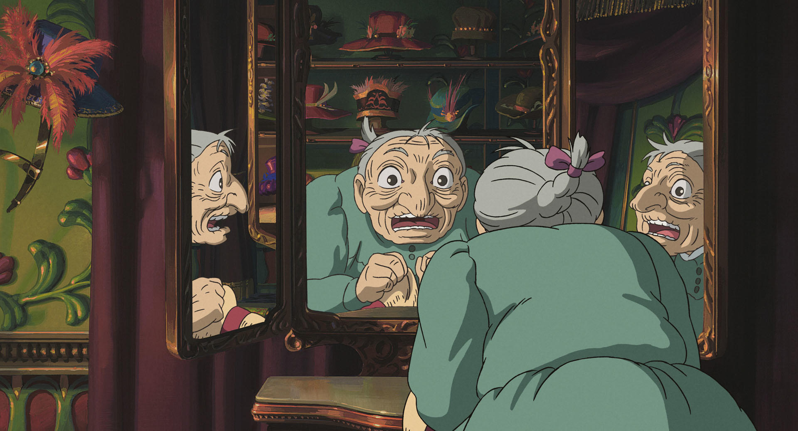
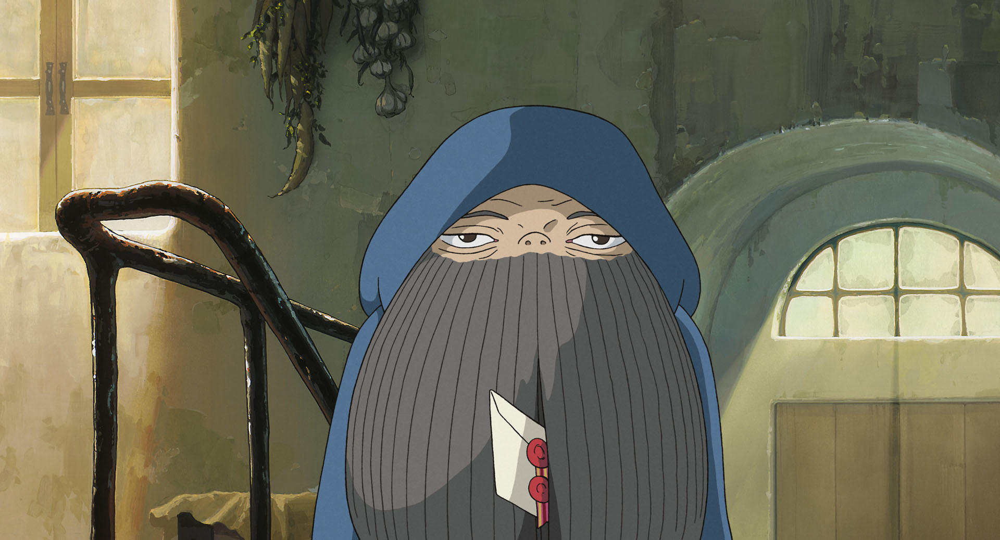
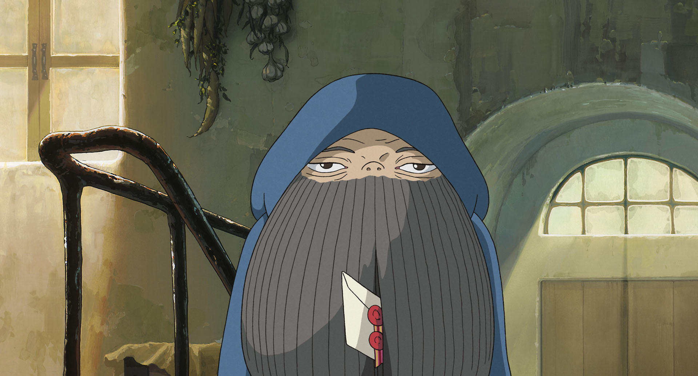

故事簡介
在19世紀的歐洲世界，史柏麗王國裡出現了一座會移動的城堡。
蘇菲前往探望在工作的蕾蒂，被軍官搭訕，蘇菲不知該如何擺脫時冒出了霍爾搭救。
蘇菲遇見荒野女巫。當女巫得知霍爾與蘇菲見面時，為了報復蘇菲，對她下了變老的詛咒。
變老的蘇菲決定離家出走。在路上蘇菲救了稻草人，稻草人為蘇菲引來了霍爾的移動城堡。
人物介紹
蘇菲（ソフィハッター）
18歲的蘇菲，以長女的身分代替繼母哈妮繼承父親遺留下來的哈達帽子店，店面不大且樸素。蘇菲在故事一開始顯得沒有主見，對自己的外貌也缺乏自信，經常因為自卑而陷入低潮的情緒裡，對自己備受桎梏的生活感到無奈。
因為與霍爾有一面之緣而被荒野女巫盯上，被荒野女巫施以詛咒變成90歲的老婆婆，之後誤打誤撞進入霍爾的移動城堡，並以城堡清潔婦的身分住下。
在城堡的生活中漸漸找回生命的意義，跟自我的價值；雖然身體變老，但精神卻變年輕起來。變得更有自信跟勇氣，也影響跟改變了霍爾。
有趣的是，當蘇菲展現自信跟勇氣的一面時，他的外表會暫時恢復成原本的年齡；而也表示精神年齡是不受限於肉體衰老的限制。
最後蘇菲也成功恢復了原本的年齡，雖然頭髮的顏色依舊為變成老婆婆後的銀色，象徵著蘇菲的成長與改變。最後同時拯救了差點死掉的霍爾，並解開卡西法的契約，在重建完畢的移動飛行城堡中過著幸福快樂的日子。
霍爾（ハウル）
法力高強的魔法師，是移動城堡的主人，謠傳他會吃掉年輕漂亮女孩的心臟，為了自由生活而有很多名字（詹金斯、潘德拉肯等）。
平常是個金髮的俊美青年，雖然嚮往自由自在的生活，但因受國家徵召，而時常變身成巨大的人臉鳥身生物，來回穿梭於戰場。 非常注重外表，經常改變髮型與穿著，會因髮色不如意和被女孩子拒絕發脾氣。
是王宮御用魔法師莎莉曼夫人唯一的門下弟子，曾因主動接近荒野女巫而身陷詛咒與惡魔訂下契約。莎莉曼召霍爾，但因其害怕莎莉曼強大的魔法而叫蘇菲代替他去，同時被她的手下追查霍爾的家，不讓霍爾繼續跟惡魔作交易，不然就會像對付荒野女巫一樣奪走其魔力。
在少年時與火魔卡西法訂下契約，而陷入「成為魔王」的險境，差點失去心性，唯一方法是用卡西法將心臟還給霍爾而存活下來。在跟蘇菲生活的日子中，被蘇菲的積極果敢影響，在他保護蘇菲的同時，蘇菲也在最後救了他，之後兩人過著幸福快樂的日子。

卡西法（カルシファー）
是一個火惡魔，前身是流星─星之子。在下著流星雨的溼地高原的夜晚與少年霍爾以「心臟」訂下契約，之後居住在城堡壁爐中，是移動城堡的動力來源。 主食是木柴；但蛋殼、培根、荷包蛋這類的副食品也很喜歡。不喜愛由火藥產生的火燄，認為它們不懂禮貌。
平時只接受霍爾的命令，但也曾被蘇菲以半強迫的方式，讓她在它上面煮東西，原因是她要拆穿卡西法和霍爾契約而聽從的。
之後因蘇菲解開它與霍爾之間的契約而獲得自由，但仍選擇回來與大家在一起。
荒野女巫（荒地の魔女）
曾是個才華洋溢的魔女，因和惡魔作交易，不敵邪惡誘惑導致身心都被腐蝕而誤入歧途。只會施魔法但不會解魔法。
五十年前從王宮被趕到荒地，使喚著許多利用魔法塑造出的橡膠人作為手下。
因霍爾的逃避而遷怒蘇菲，下詛咒讓蘇菲變成老婆婆，後來被莎莉曼夫人用計奪走了法力，因而恢復原本的年紀。
失去法力後變成平時無惡意的老人，之後與蘇菲霍爾一家住在一起。也因變老而造成腦筋不靈光，喜歡大口抽雪茄，有時會因對於霍爾身上心臟的偏執而作出不可理喻的行為。
更多劇照

 





 
